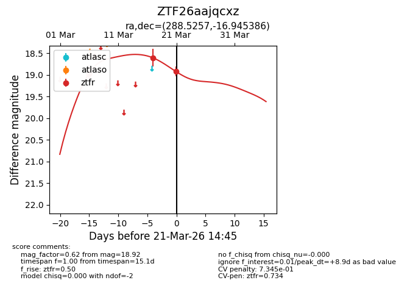
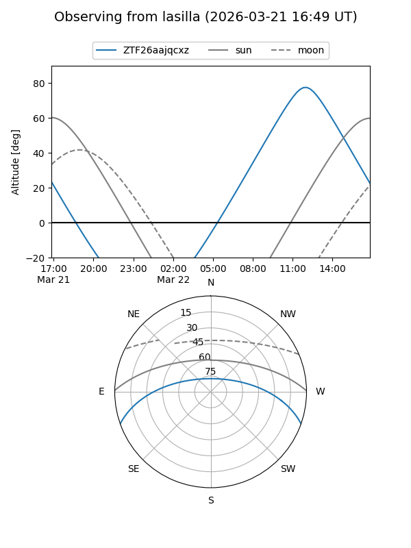
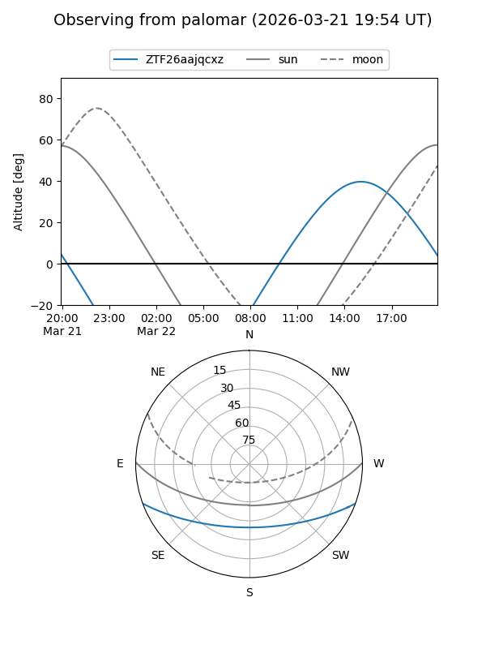
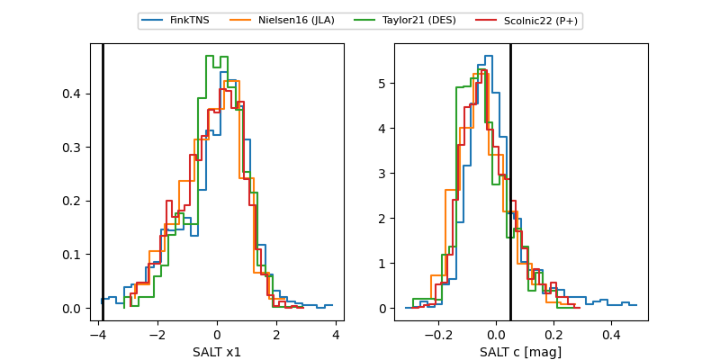

ZTF26aajqcxz
Target ZTF26aajqcxz at 2026-03-21 14:47
Aliases and brokers:
FINK: link
Lasair: link
ALeRCE: link
alt names
ZTF26aajqcxz (ztf,fink_ztf)
Coordinates:
equatorial (ra, dec) = 288.5257,-16.94539
equatorial (HMS+DMS) = 19:14:06.18,-16:56:43.39
galactic (l, b) = (20.1284,-12.53042)
Flags:
likely cv
Photometry:
last ztfr=18.92
3 ztfr detections
Lightcurve

Visibility


Additional plots
